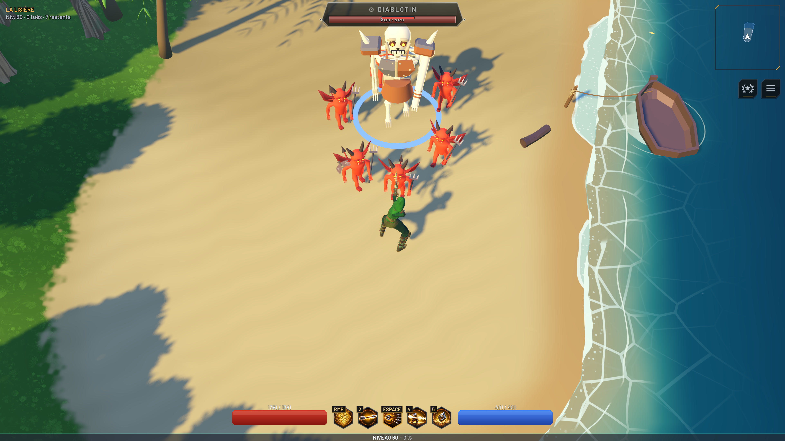

Version 0.1.0 · 23 octobre 2026
Première version jouable
La première version jouable : une campagne dans la forêt de Verdeclat, trois classes, onze arbres de talents et la forge.
Premier pas dans les cendres
Une campagne de cinq niveaux dans la forêt de Verdeclat, un boss au bout de chacun, une arène infinie et un niveau de cauchemar qui monte quand on termine la campagne.

Trois classes, onze dieux
Gardien de braise, Arcaniste et Rôdeuse, chacun avec son passif et son arbre d'ascension, et onze arbres de talents à talents majeurs. Compétences, supports et auras se débloquent pour tout le compte.
La forge
Modificateurs normaux, spéciaux et ultimes, re-forge en un clic, re-jet d'une ligne ou de tout l'objet, et corruption.
Notes de version
Contenu
- Campagne de 5 niveaux dans la Forêt de Verdeclat, tracés sinueux sans cul-de-sac, boss en fin de niveau.
- Niveau de cauchemar global : terminez toute la campagne pour débloquer le palier suivant (+16 niveaux de monstres).
- Arène infinie : vagues sans fin, choix de la vague de départ, record personnel.
- 3 classes (Gardien de braise, Arcaniste, Rôdeuse) avec passif de classe et arbre d'ascension à branches.
- 11 arbres de talents (Guerre, Savoir, Chasse, Flammes, Givre, Foudre, Afflictions, Bastion, Mana, Alchimie, Légions) avec talents majeurs aux paliers 10 et 20.
- Compétences, supports et auras à débloquer pour tout le compte, gemmes jusqu'au niveau 20.
- Compétences de mouvement (Ruée, Clignement, Bond de l'ombre, Fente) et de dégâts sur la durée (Nuée toxique, Malédiction de flétrissement, Totem ardent).
- Élixirs à charges gagnées en tuant des monstres, débloqués après la première carte.
- Arcs, armes à deux mains, main gauche (double maniement ou bouclier), légendaires pour chaque emplacement.
Combat
- Armure, évasion, blocage, résistances (max 60 %, augmentable) et bouclier d'énergie avec délai et vitesse de recharge.
- Emplacements de compétences débloqués au fil des niveaux, auras à partir du niveau 20.
Forge
- Modificateurs normaux, spéciaux et ultimes (ultimes à partir de l'ilvl 40), tiers limités par le niveau d'objet.
- Re-forge en un clic, re-jet d'une ligne ou de tout l'objet, corruption.
Interface
- Interface « Forge géométrique », icônes vectorielles en 5 styles au choix.
- Infobulles détaillées des compétences (niveau actuel et suivant) et des objets.
- Options : son, affichage, jeu, contrôles, nouveautés.
- Mise à jour automatique au démarrage.